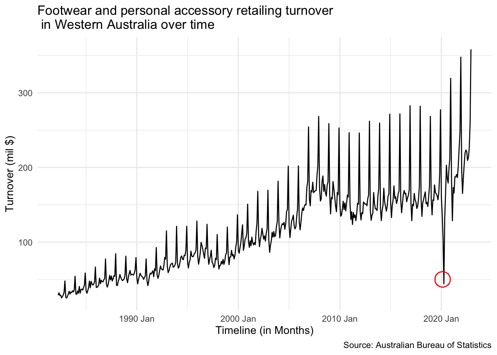
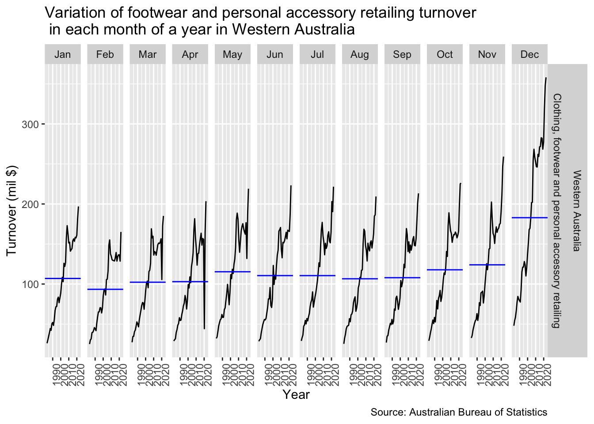
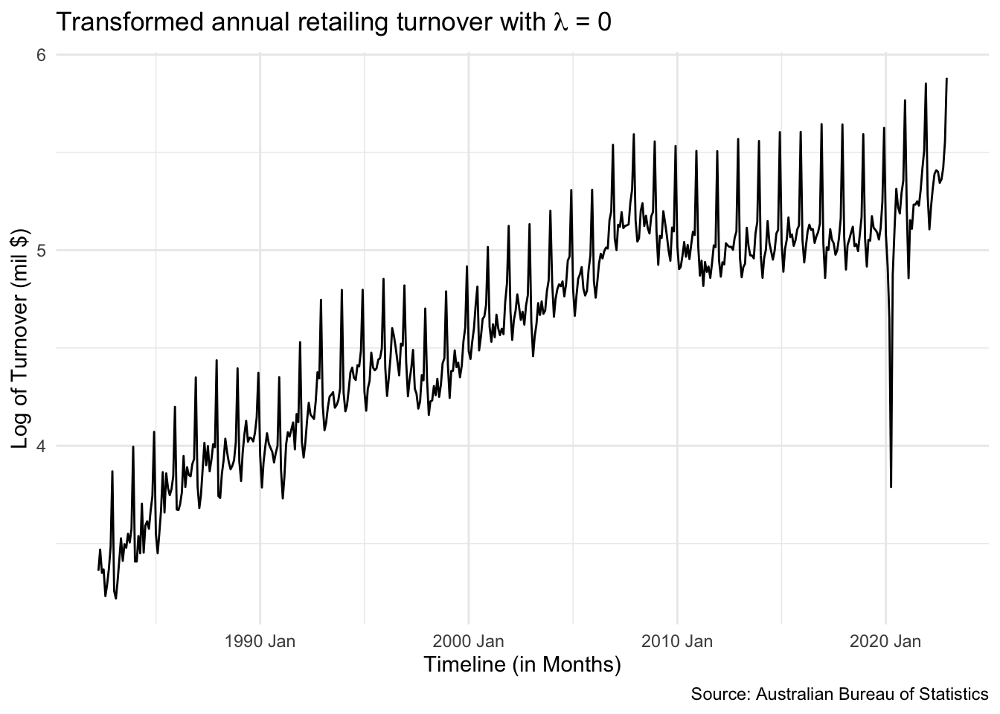
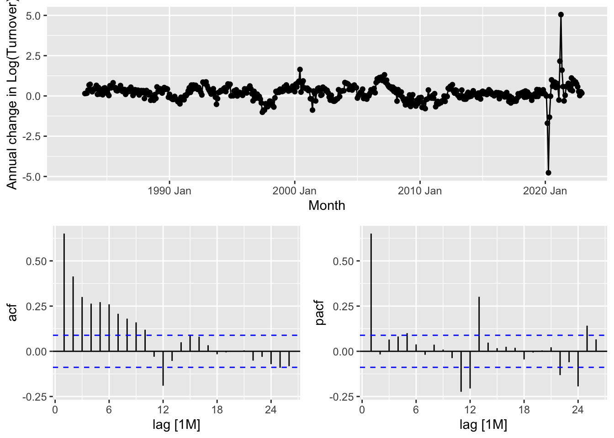
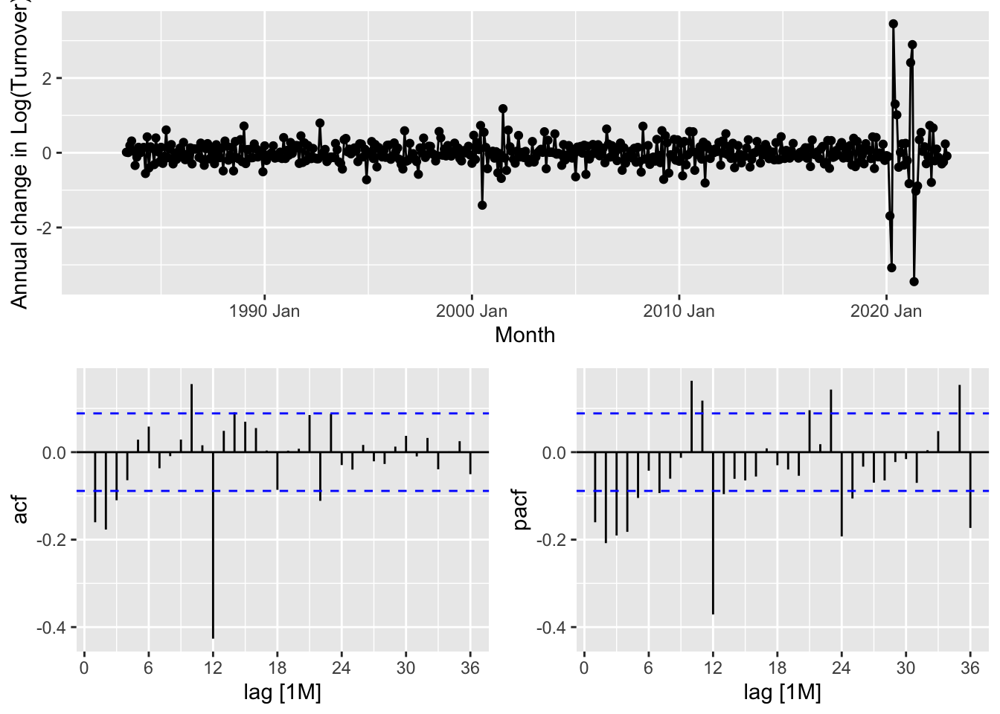
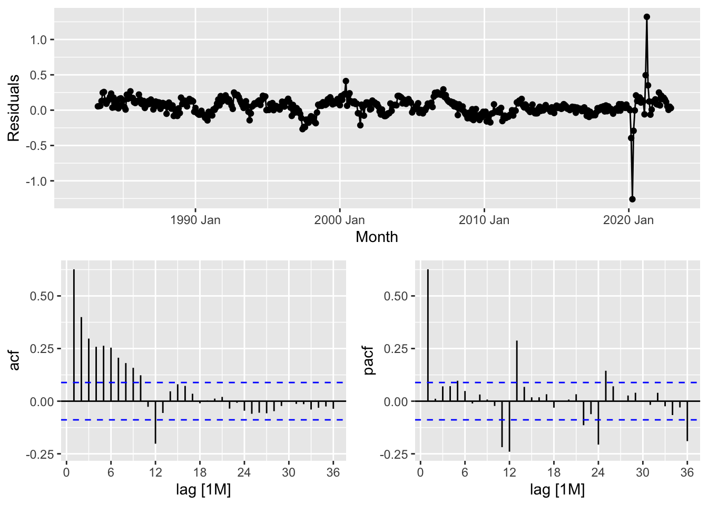

Retail forecasting project
1 Statistical features of the data
1.1 Complete timeseries data
Let us observe the time series data for the turnover generated.
Key takeaway
Based on Figure 1 we can observe the following details in the timeseries plot:
There appears to be a seasonality in the plot with a peak being observed on every December of a year. The seasonality additionally appears to be consistent throughout the plot.
The amplitude of the peaks observed in the data appear to be increasing with time. This indicates that the variation in seasonality of the data is multiplicative in nature.
The plot also indicates the presence of an additive trend in the data with overall turnover increasing every year except for the year of 2020 in an approximate linear fashion.
There appears to be an outlier in the data during the year of 2020 as indicated by the red cricle. While we expect a drop in retailing turnover in the early months of a year due to a strong retailing period in the previous December, however, in the year of 2020, the drop in turnover was considerably lower than all the other years. This is expected to be caused due to shutting down of businesses and their activities in the initial part of the COVID-19 pandemic.
1.2 Variations of trade within a year
Key takeaway
Figure 2 illustrates the variation of turnover within each year generated by the retailers in Western Australia each year. Some key observations are as follows:
The turnover generated in Western Australia has been on a rise each year. This suggests that the expenditure of people on footwear and personal accessory retailing services in WA have been increasing each year and could be attributed to the growing population in the state.
We observe that the retailing turnovers in each year are generally higher in the months of November and December. This could be a result of the festive period when there are many customers purchasing gifts for families and friends or due to the special sales promotions such as Boxing Day sales.
Additionally, the month of November also includes the Black Friday sale which attracts multiple customers to purchase items due to specialised and limited time promotions. This may explain the slight rise in turnover during the month of November each year.
The rise in the retail turnovers for the month of December is especially higher during the more recent years (2011-2021). This could again be an indicator for the growing population in the country during this period, which has gone on to to create a bigger market and drive sales, hence, contributing to the higher turnover.
There appears to be one single year when the retail turnover dropped steeply in the month of April but eventually picked up for the rest of the year. This could be an indicator of the effects of the COVID-19 lockdown when the business activities were very limited and prevented multiple retailers in various regions of Australia, including the state of Western Australia to be able to generate revenue.
1.3 Comparison of turnovers in each month of retail trade

Key takeaway
Figure 3 illustrates the variation of retailing turnover faceted by each month and plotted against years. Key observations are as follows:
As already observed in Section 1.2, the plot suggests that the retailing turnover has increased each year from 1990 to 2022.
The average retail turnover is observed to be higher for the month of December when compared to the rest of the year. As explained previously, the main driver for the boost of retailing turnover in this period is attributed to the festive season which includes Christmas, Boxing Day and the run up to the New Year Eve.
A drop in retail turnover for the months of March, April and May was observed in 2020. This can be attributed to the lockdowns set in place when the pandemic outbreak was first experienced.
2 Transformation and differencing of the data
In Section 1.1, we have determined that the timeseries data in hand has multiplicative variation in seasonality and a linear trend. This inadvertantly means that we are dealing with non-stationary data.
Converting a non-stationary data to a stationary data is done through the following steps:
2.1 Box-Cox Transformation
In order to apply the Box-Cox transformation, we are required to obtain the appropriate value of the parameter \(\lambda\) which will allow us to analyse the timeseries data with the seasonal variations being equal at all levels, thereby transforming the multiplicative variation in the data into an additive variation.
Let us perform a log transformation by using \(\lambda = 0\).

Key takeaway
Figure 4 illustrates the timeseries data for retailing turnover after being transformed through the Box-Cox transformation on the log scale. Here are some key observations:
We observe that unlike the original data, the variation in seasonality of the Log transformed data was much more similar through the timeseries.
Using the Log transformation, the datapoints with lower seasonality variation (data in the initial time period) was stretched to larger variations while the datapoints with higher seasonality variation (data in the later time period) was compressed to relatively smaller variations.
Since the variations are fairly consistent throughout the entire period of the data, we can consider the transformed data to contain an additive variation of seasonality.
Usage of a log transformation also provides better interpretability as changes in a log value are proportional to changes on the original scale, multiplied by a factor.
2.2 Seasonal differencing
Now that we have transformed the data such that the variation of the peaks and troughs are consistent and do not change with the level of the timeseries, now we shall attempt to seasonally difference the data.

Key takeaway
Based on Figure 5, we observe that:
The timeseries data of the log of turnover after seasonally differencing appears to be non stationary even though centred majorly around 0, with the exception of a few outliers in 2020 due to the effects of COVID-19.
Based on the ACF plot, we can see that the autocorrelation at lag 12 (or at end of the year) is still significant, but becomes insignificant from there on. It nearly takes a full year for the lags to become insignificant.
Additionally, from the ACF plot, as we have multiple significant lags, we can say that the timeseries plot after seasonal differencing is not completely stationary yet.
As a result, we will attempt to perform regular differencing next.
2.3 Regular differencing

Key takeaway
Based on Figure 6, we observe that:
The timeseries data of the log of turnover after regular and seasonal differencing appears to be stationary with the exception of a few outliers in 2020 due to the effects of COVID-19. As a result, we have successfully extracted both the seasonality and the trend of the data.
Based on the ACF plot, we can see that there are much fewer significant lags, with the most significant lag being at lag 12 as a result of the data being seasonal. Therefore, we can say that the auto-correlations have exponentially decayed.
As a result of the regular and seasonal differencing applied to the timeseries, we can now state that the timeseries data is stationary.
3 Methodology for creating a list of ARIMA and ETS models
Note
ETS models designed to handle both trend and seasonality in the data. Hence, to obtain an ETS model, we will work with the un-transformed retail data.
The ARIMA model cannot handle data which varies with time, which is the case for the retail data. As a result, we will utilise the stationary data worked out in Section 2 to fit these models.
While exponential smoothing models are based on a description of the trend and seasonality in the data, ARIMA models aim to describe the autocorrelations in the data.
3.1 Splitting into train and test data
As a first step, we will split our data into train and test data. Let us allocate the final 2 years as the test dataset while the remaining data will be utilised as the training data for the models to fit.
Code
retail_train <- retail %>% filter(Month <= yearmonth("2020 Dec"))
retail_test <- retail %>% filter(Month > yearmonth("2020 Dec"))3.2 Creating an ETS model
Based on our analysis of Figure 1, we have established that our data contains a linear trend and a multiplicative variation in seasonality. Hence, while fitting the ETS model, we will keep these in mind. We are mainly interested to evaluate the following two models for the current timeseries data:
- Default ETS model
- ETS model with multiplicative errors, additive trend and multiplicative seasonality (MAM model)
Code
fit_ets <- retail_train %>%
model(mam=ETS(Turnover ~ error("M") + trend("A")+ season("M")),
ets_auto = ETS(Turnover)) Let us check the default model identified by the ETS algorithm.
| State | Industry | mam | ets_auto |
|---|---|---|---|
| Western Australia | Clothing, footwear and personal accessory retailing | <ETS(M,A,M)> | <ETS(M,Ad,M)> |
| .model | sigma2 | log_lik | AIC | AICc | BIC |
|---|---|---|---|---|---|
| ets_auto | 0.01 | -2322.65 | 4681.31 | 4682.84 | 4755.86 |
| mam | 0.01 | -2327.30 | 4688.60 | 4689.97 | 4759.02 |
Comparison of ETS models
As we can observe from Table 1, the default ETS model fitted a “MAdM” model which is expected to produce forecasts with damped trends.
Table 2 further compares the performance of the two models. Based on the AIC metric, the auto-generated ETS which is a “MAdM” model with damping was found to perform better than the “MAM” model without damping.
3.3 Creating an ARIMA model
An ARIMA model will be fitted on the stationary data which has been obtained in Section 2. In order to obtain the specifications of the ARIMA models which will be fitted, we will need to look deeper into the residuals as illustrated by Figure 7.

Shortlisting ARIMA models
As we observe that the ACF plot is gradually decreasing, we turn our attention to the PACF plot and choose the auto-regressive parameter p as 24 which is the last significant lag in the plot. As we have chosen the auto-regressive component, we will automatically choose the moving average parameter q as 0. Therefore, the model will be ARIMA(24,0,0).
Similarly, if we consider the ACF plot and disregard the PACF plot, we will choose the moving average parameter q as the last significant lag from the ACF plot which is at lag 12 and automatically choose the auto-regressive component to be 0. Therefore, the model will be ARIMA(0,0,12).
We will additionally look into seasonal ARIMA models by including the seasonal lags in the model definition. For the auto-regressive model, the last significant seasonal lag from the PACF plot is observed at P = 2 (or 24 months). We automatically choose Q = 0. The model is defined as
ARIMA(p=24,d=1,q= 0)(P=2,D=1,Q=0)[m = 12]In a similar manner, a seasonal ARIMA model with just the moving average parameters will be defined as ARIMA(p=0,d=1,q= 12)(P=0,D=1,Q=1)[m = 12]
| .model | sigma2 | log_lik | AIC | AICc | BIC |
|---|---|---|---|---|---|
| arima_auto | 0.01 | 490.03 | -970.06 | -969.92 | -949.49 |
| ma | 0.01 | 490.14 | -952.28 | -951.32 | -894.69 |
| ar | 0.01 | 494.96 | -935.91 | -932.35 | -824.84 |
Comparison of ARIMA models
Among the ARIMA models which were fitted, the auto-generated ARIMA was observed to perform better than the AR and MA models while comparing on the basis of AIC. The fitted statistics can be referred to in Table 3.
Note on AIC comparison for ETS and ARIMA model
We cannot use AIC for comparing ARIMA and ETS models. This is because ARIMA and ETS are looking at completely different data (transformed and original data respectively) and this is reflected through the significant differencess of AICs for the ETS and ARIMA models. Hence, the AIC metric can only be used to compare between different ETS models or between ARIMA models which share the same differencing value.
In our case, all the ARIMA models have a differencing of 1, and hence, can be compared on the basis of AIC.
RMSE can be however be compared across the different models. This is because during computation of RMSE scores, all transformations on the data are undone and we are simply checking the level of forecast accuracy across different models.
| .model | .type | RMSE | MAE | MAPE | MASE | RMSSE |
|---|---|---|---|---|---|---|
| mam | Test | 22.71 | 19.54 | 9.23 | 2.16 | 1.74 |
| ets_auto | Test | 25.34 | 21.66 | 9.98 | 2.39 | 1.94 |
| ar | Test | 38.41 | 31.72 | 15.02 | 3.51 | 2.94 |
| ma | Test | 39.47 | 36.67 | 17.36 | 4.05 | 3.02 |
| arima_auto | Test | 39.96 | 35.72 | 16.84 | 3.95 | 3.06 |
Forecast comparison based on RMSE
We utilise the root mean square metric (RMSE) to compare the forecast accuracy of each model. These values are tabulated in Table 4.
Based on the RMSE scores of the 2-year forecast period, we can observe the the MAM ETS model has performed the best when compared to all the ETS and ARIMA models fitted on the training data.